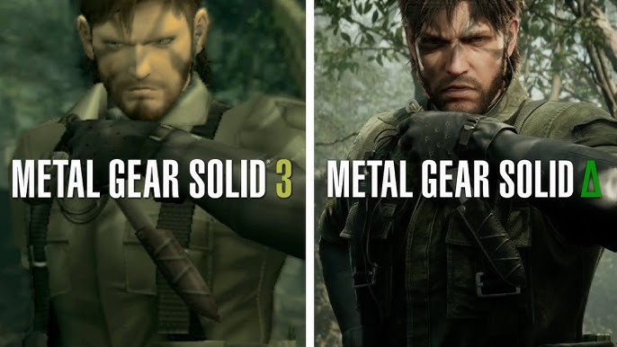
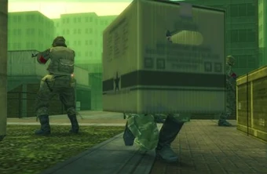
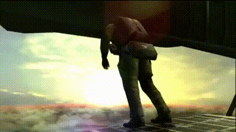

Overview

This modern re-creation of the 2004 Metal Gear Solid 3: Snake Eater takes place in the jungle and features FOX operative Naked Snake who has been sent into hostile territory to extract a defector and destroy the Shagohod, a "metal gear" built by the Soviet Union and is the first nuclear missile all-terrain tank capable of destroying cities. As Snake navigates his way through the jungle to complete this mission, he will need to use both planning and stealth to survive. The graphics and gameplay systems have been updated from the original so that the modern player can experience the same storyline that made the original so popular.
Gameplay
Stealth Mechanics

Unlike typical action games, Snake Eater emphasizes stealth over engaging in combat with enemies. When you are avoiding enemy patrols you have several options available to you including camouflage, hiding in high grass and sneaking through the jungle as quietly as possible. The AI for the enemy will react to noise (sound), footprints, and suspicious movement. This encourages a player to plan ahead and use stealth strategies as opposed to aggressive ones.
Wilderness Survival

The Wilderness Survival System found in Metal Gear Solid 3 is one of the defining features that sets this game apart from others. To maintain your stamina in the wild, you must hunt and kill an animal to eat it, treat injuries from battles and change camouflage to fit your environment. The depth of these systems brings added immersion, the jungle feels like a place where anything can happen at any time.
Storytelling

The game has been called one of the most emotionally intense games in the entire Metal Gear series. It uses a combination of cinematic cut scenes and character dialogue to create an emotional connection between the player and the themes of loyalty, sacrifice, and how difficult it can be for people to remain morally pure while being patriotic. The way that Snake relates to his mentor, The Boss, is what makes this game so emotionally connected to the overall plot of the series and plays a major role in Snake's transformation from a regular soldier into one of the most important characters in the Metal Gear series.
Quiz
A short quiz to test your knowledge of Metal Gear Solid 3: Snake Eater.
Score: / 3